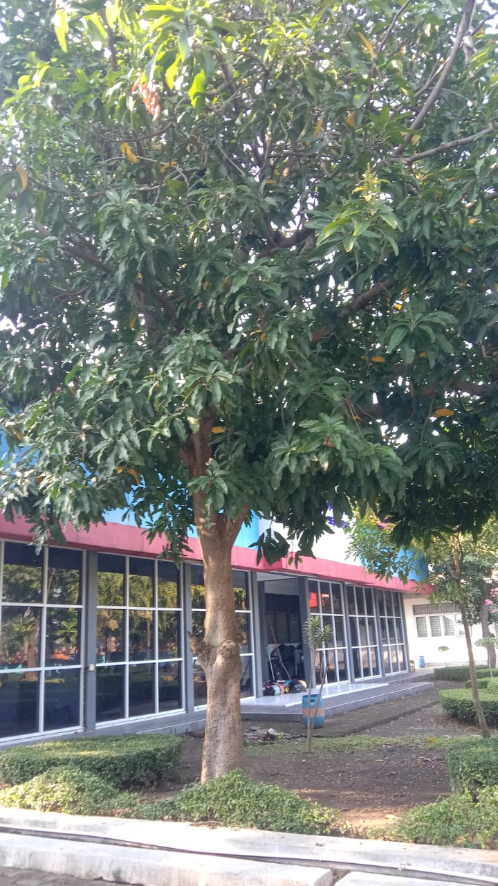

🍃 Mangga (Mangifera indica)

Sejarah Mangga
Mangga berasal dari daerah sekitar perbatasan India dengan Burma dan telah menyebar
ke Asia Tenggara sekitar 1500 tahun yang silam. Nama "mangga" sendiri berasal dari bahasa Tamil,
yaitu mankay yang berarti "pohon mangga" + kay yang berarti "buah".
Klasifikasi Ilmiah
- Kerajaan: Plantae
- Klad: Tracheophyta
- Klad: Angiospermae
- Klad: Eudikotil
- Klad: Rosidae
- Ordo: Sapindales
- Famili: Anacardiaceae
- Genus: Mangifera
- Spesies: M. indica
Penjelasan Detail
- Pohon Mangga: Berperawakan besar, dapat mencapai tinggi hingga 30 m atau lebih. Batang tegak, bercabang kuat dengan daun-daun lebat membentuk tajuk yang indah.
- Daun: Daun tunggal, tersebar, berbentuk jorong sampai lanset dengan panjang sekitar 15–40 cm dan lebar 6–16 cm.
- Bunga: Merupakan bunga majemuk dalam malai bercabang banyak di ujung ranting. Berumah satu, dengan bunga jantan dan hermafrodit.
- Kandungan Nutrisi: Rendah kalori (100–110 kalori per buah), kaya antioksidan dan nutrisi penting, mengandung 1,5–2 gram serat per buah.
Manfaat Mangga
- Meningkatkan Kesehatan Mata: Vitamin A tinggi untuk menjaga kesehatan mata.
- Meningkatkan Sistem Kekebalan Tubuh: Vitamin C dan antioksidan membantu melawan infeksi.
- Membantu Pencernaan: Serat membantu melancarkan pencernaan dan mencegah sembelit.
- Mengurangi Risiko Penyakit Jantung: Serat dan antioksidan membantu menurunkan risiko penyakit jantung dan stroke.
Sumber Informasi